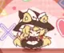

Touhou India 
Welcome to Touhou India! We're a group of chill Touhou (東方) enthusiasts from India.
Our server is primarily Hindi-speaking however everyone is welcome to our server despite the
linguistic differences. Our small community is quite active and diverse, people from all parts of India
share their common interest for Touhou Project.
Feel free to discuss and share lore and headcanons about Touhou Project; whether you believe that
Reimu Hakurei works with Narendra Modi or how Lunarians might control Sakuya, we are excited to hear
your theories about the mysterious land of Gensokyo! You can also share other people's fanarts or
share your own OC and get featured at the community gallery. Not to mention
we love ZUN's epic fire music from Touhou Project and Hifuu Club and also the various fan-made arrangements.
Our small community is also quite diverse, people from different parts of India have different tastes in
video games. We also enjoy playing Osu!, Geometry Dash and Undertale... So if you're into that feel free to
join us. Our server boasts minimal rules: don't post racist content, and don't flame other users, we're a fun
community, not a school with a thousand rules. Whether you have 10 Lunatic 1CC runs in every Touhou game,
just like your fumo plushies or simply love shitposting low quality memes, you will find a place
in this epic community. We hope to see you in the Discord server!
We use a Discord server for the community; this website doesn't host anything itself except for the server invite. You will need a Discord account to join our server; their terms and privacy policy apply there.